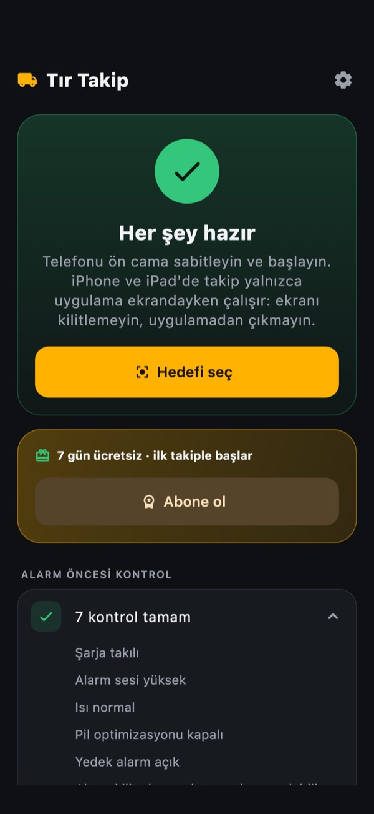
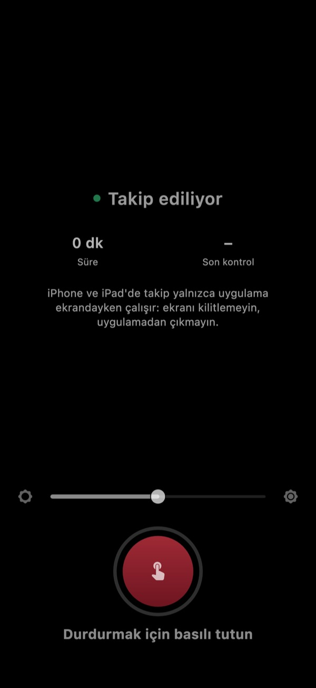
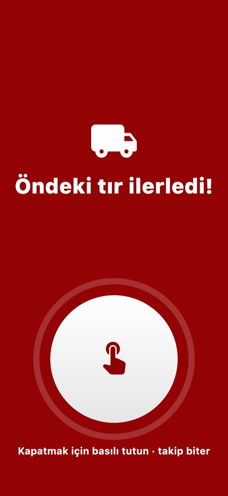
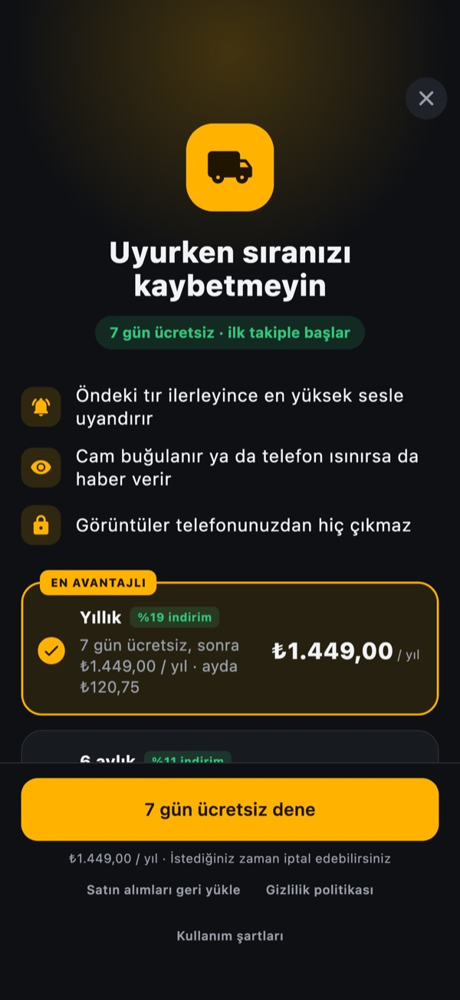
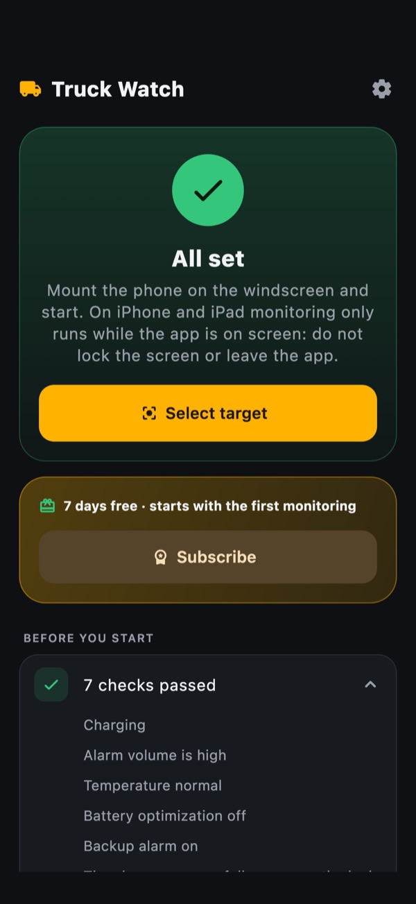
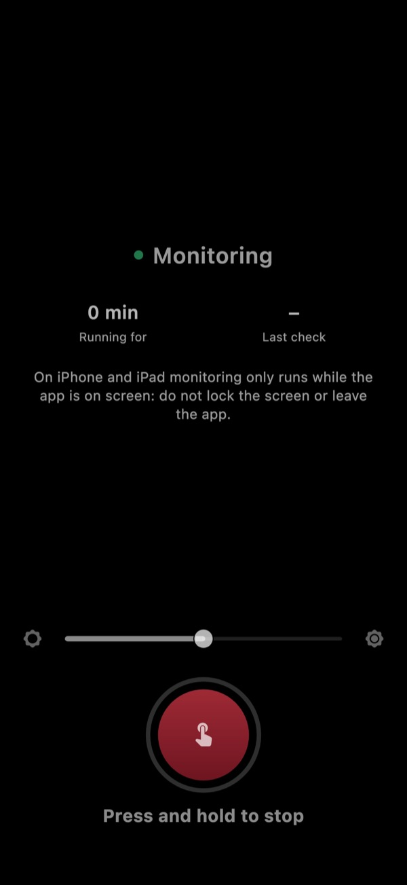
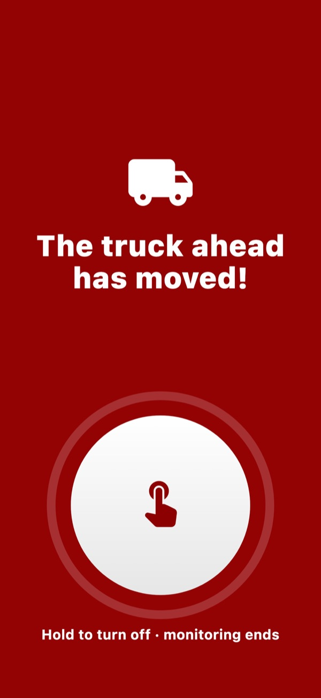
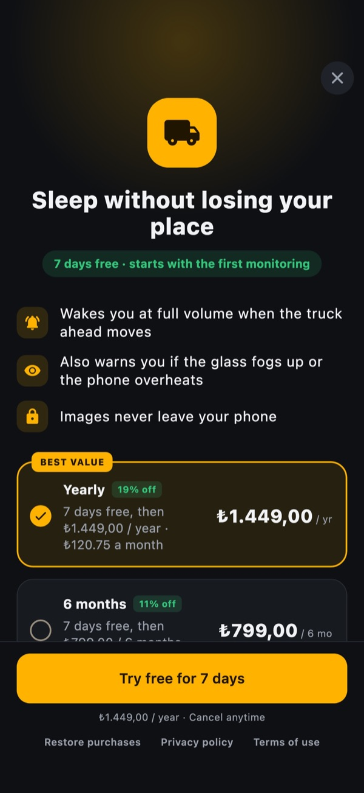

Uyurken sıranızı kaçırmayın.Sleep without losing your place in line.
Gümrükte, limanda ya da fabrika kapısında saatlerce sıra mı bekliyorsunuz? Siz dinlenirken telefon öndeki tırı gözler, tır ilerlediği anda sizi en yüksek sesle uyandırır.
Waiting for hours at the border, the port or a factory gate? While you rest, your phone keeps an eye on the truck ahead and wakes you at full volume the moment it moves.
7 gün ücretsiz, kart gerekmez.
Free for 7 days, no card needed.
Nasıl çalışırHow it works
-
Telefonu ön cama takınMount the phone
Tutucuyla ön cama sabitleyin; arka kamera öndeki dorseyi görsün.
Fix it to the windscreen with a holder so the rear camera sees the trailer ahead.
-
Sarı kutuyu yerleştirinPlace the yellow box
"Hedefi seç"e basın, sarı kutuyu dorsenin arkasına oturtun.
Tap "Select target" and fit the yellow box to the back of the trailer.
-
Alarmı kurun, dinleninSet the alarm and rest
"Alarmı kur"a basın. Gerisini telefon izler.
Tap "Set alarm". The phone does the watching.
Ne zaman çalarWhen it rings
-
Öndeki tır ilerleyinceThe truck ahead moves off
En yüksek sesle, sessiz modda bile.
At full volume, even in silent mode.
-
Kamera dorseyi göremezseThe camera loses the trailer
Cam buğulandığında ya da telefon kaydığında haber verir.
When the windscreen fogs up or the phone shifts.
-
Telefon aşırı ısınırsaThe phone overheats
Güneşte kalan telefon kapanmadan önce sizi uyarır.
A phone baking in the sun warns you before it shuts down.
Alarmı kapatmak için düğmeye 1 saniye basılı tutun. iPhone ve iPad'de takip, uygulama ekranda açıkken çalışır: ekranı kilitlemeyin, uygulamadan çıkmayın.
Hold the button for 1 second to stop the alarm. On iPhone and iPad, monitoring runs while the app is on screen: don't lock the screen or leave the app.
UygulamadanInside the app








GizlilikPrivacy
Görüntüler yalnızca telefonunuzda işlenir. Hiçbir görüntü kaydedilmez, dışarı gönderilmez. Hesap yok, reklam yok.
Images are processed on your phone only. Nothing is saved or sent anywhere. No account, no ads.
FiyatPricing
İlk takiple başlayan 7 gün ücretsiz. Kart gerekmez, süre bitince ücret alınmaz.
7 days free, starting with your first monitoring. No card needed, nothing is charged when it ends.
- Aylık150 ₺
- 6 aylık799 ₺
- Yıllık1.449 ₺
Then a monthly, 6-month or yearly plan. Prices for your country are shown in the app and the store.
DestekSupport
Alarm neden çalmadı?Why didn't the alarm ring?
Telefonun şarjda, sesinin açık ve sarı kutunun dorsenin üzerinde olduğundan emin olun. Uygulamadaki "Alarm öncesi kontrol" listesi eksikleri gösterir. iPhone'da uygulama ekranda açık kalmalıdır.
Make sure the phone is charging, the volume is up and the yellow box sits on the trailer. The "Before you start" list in the app shows what is missing. On iPhone the app must stay on screen.
Gece ya da sisli havada çalışır mı?Does it work at night or in fog?
Karanlık, sis ya da kirli cam görüntüyü zayıflatabilir. Kamera dorseyi göremez hâle gelirse alarm çalar ve sizi uyarır.
Darkness, fog or a dirty windscreen can weaken the image. If the camera loses sight of the trailer, the alarm rings to warn you.
Aboneliğimi nasıl iptal ederim?How do I cancel my subscription?
iPhone'da Ayarlar → adınız → Abonelikler; Android'de Google Play → Profil → Ödemeler ve abonelikler. İptal, dönemin sonunda geçerli olur.
On iPhone: Settings → your name → Subscriptions. On Android: Google Play → Profile → Payments & subscriptions. Cancellation takes effect at the end of the period.
Başka bir sorunuz mu var? Yazın:Anything else? Write to us: info@batuhanyetgin.dev